Instalação do Batocera
Introdução
O Batocera.linux é uma distribuição de jogos retro de código aberto e totalmente gratuita que pode ser copiada para um pendrive ou um cartão SD com o objetivo de transformar qualquer computador em um console (ou máquina de arcade).
Baixando a imagem de gravação
Para iniciar, baixe o Batocera e grave ele no pendrive utilizando o balenaEtcher, veja a Página Principal se tiver em dúvida de como fazer.
Clique em Direct Link para baixar pelo navegador ou Torrent File para baixar por torrent (recomendado).
Selecione para máquinas mais novas ou (na parte inferior da página) 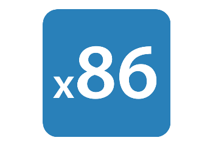 para máquinas mais antigas (15 anos +/-).
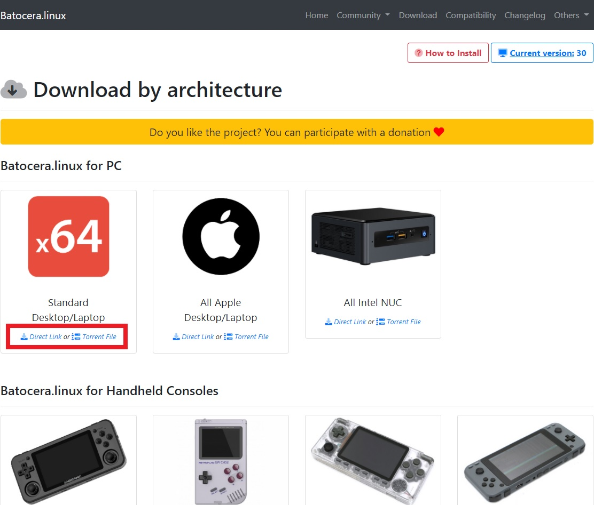Assim que o Batocera carregar a tela inicial, abra o menu principal com START (pressione espaço caso esteja utilizando teclado):
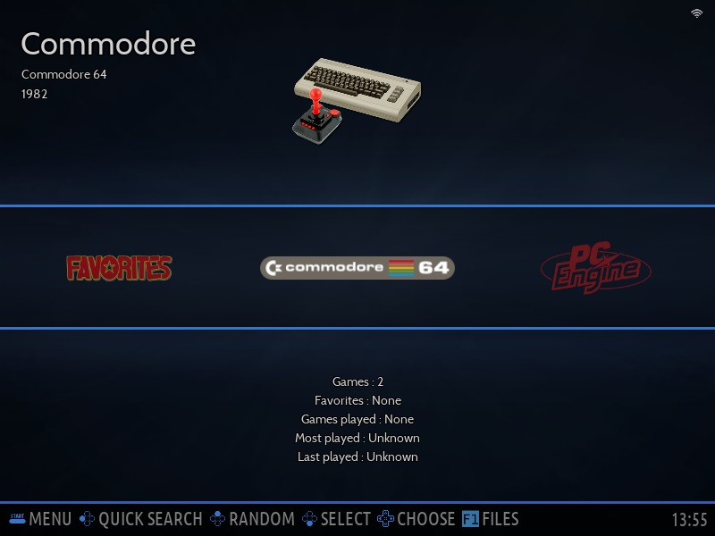Navegue até SYSTEM SETTINGS e selecione-o (com Enter caso esteja utilizando teclado):
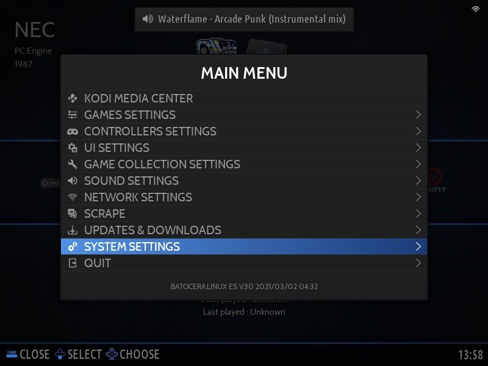Selecione a opção INSTALL BATOCERA ON A NEW DISK:
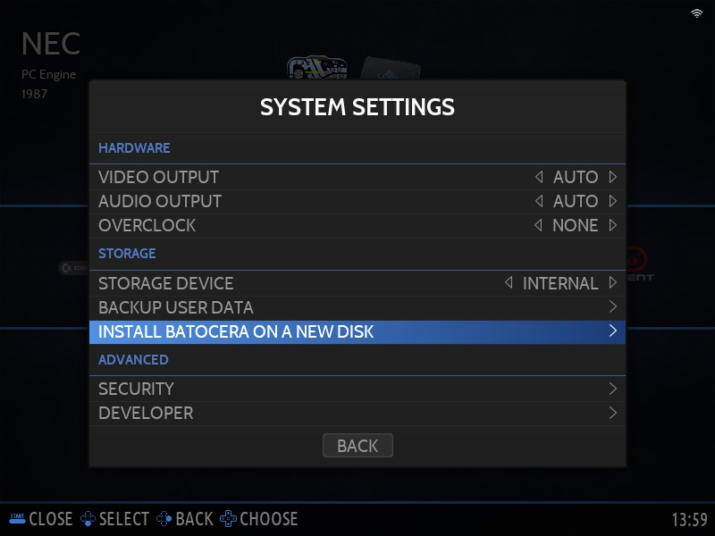Em TARGET DEVICE selecione o disco em que você deseja instalar o Batocera;
Em TARGET ARCHITECTURE selecione a arquitetura do seu dispositivo alvo (X86 ou X86_64);
Ative ARE YOU SURE? se tiver certeza das suas seleções e selecione INSTALL para iniciar a instalação;
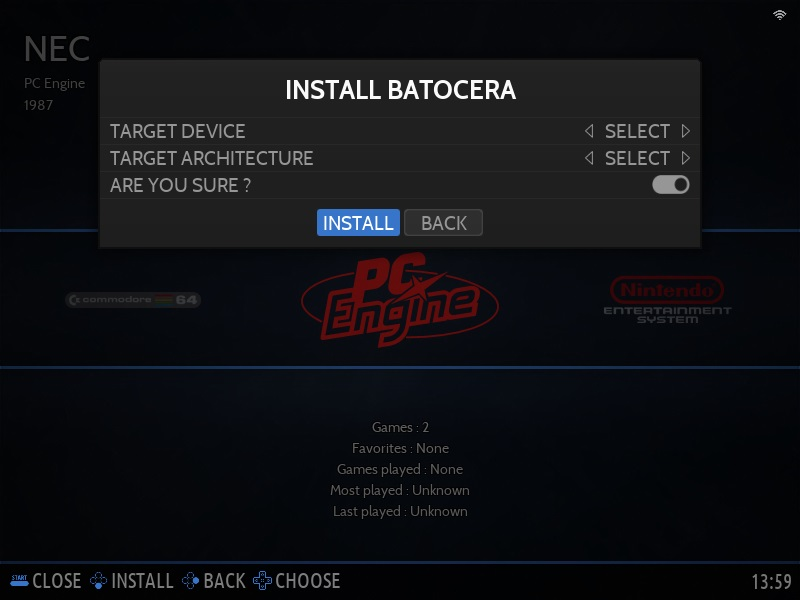Seja paciente e deixe que o instalador faça sua mágica, as vezes pode parecer que o sistema travou no meio da instalação (em torno de 75%) mas é natural que demore mesmo.
Assim que a instalação der por finalizada precisamos desligar a máquina e remover o pendrive, selecione a opção de reinicialização (caso o Batocera ofereça) ou selecione QUIT no menu principal:
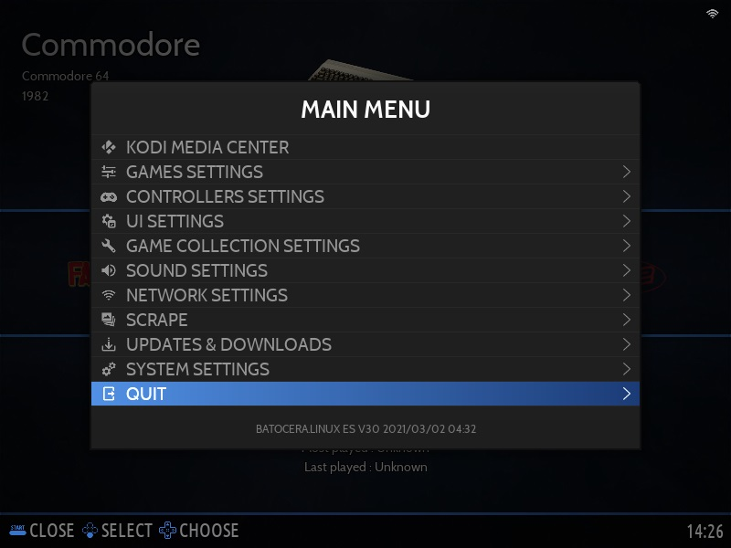E depois SHUTDOWN SYSTEM:
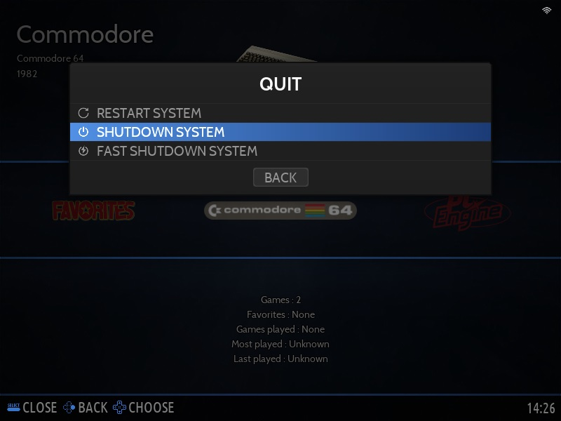Assim que a máquina estiver completamente desligada, remova o pendrive e logo em seguida inicie pelo HD do Batocera. Assim que ele chegar na tela inicial (tenha a certeza de ter algum adaptador de rede conectado na máquina) selecione NETWORK SETTINGS no menu principal:
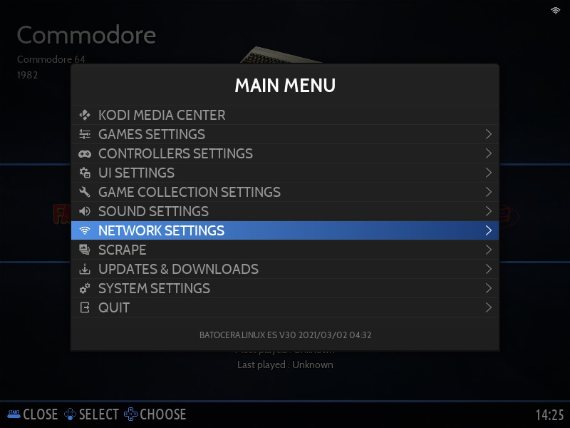Verifique as suas configuraçõe de rede (se possível anote o IP da máquina) e se ela está conectada a internet.
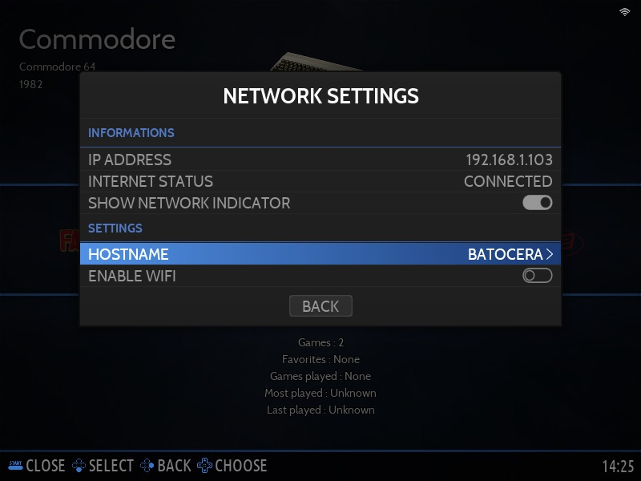Passando as ROMS/BIOS
Por padrão o Batocera já compartilha a unidade de armazenamento em rede, você pode acessar o HD dele pelo seu sistema operacional (inclusive por celular) e mover os arquivos para suas respectivas pastas.
Para facilitar esse processo, caso esteja no Windows você pode ligar o computador com o Batocera e mapear a unidade de rede. Para isso, abra o Explorer, clique com o botão direito do mouse em Este Computador e depois selecione Mapear unidade de rede...
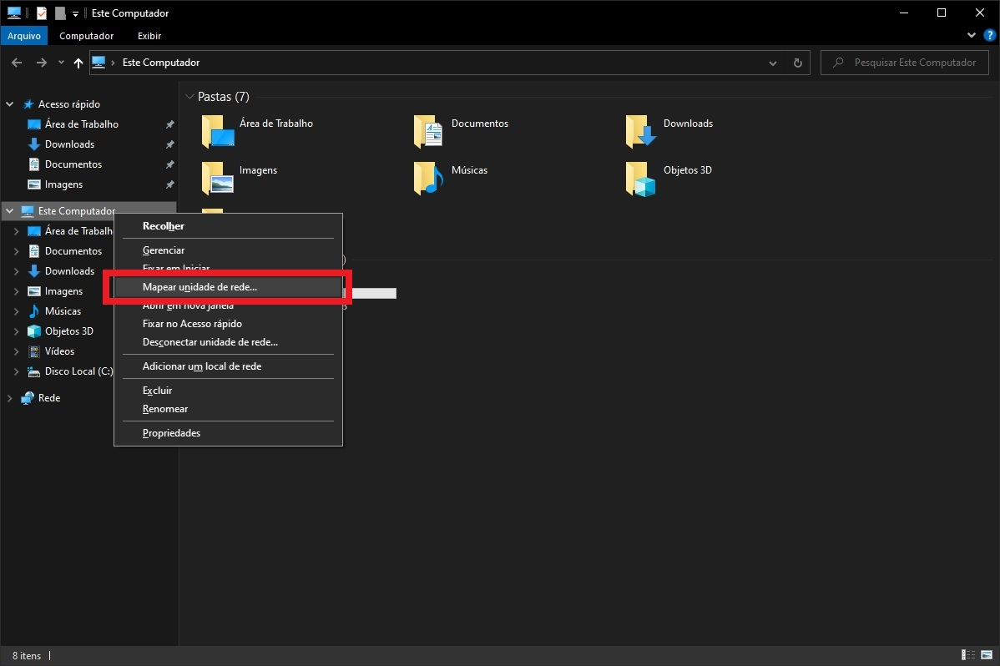Selecione a letra da unidade que você deseja (recomendo deixar em Z: mesmo) e o caminho para o compartilhamento do Batocera (seja pelo nome \\BATOCERA ou por IP como por exemplo \\192.168.1.2).
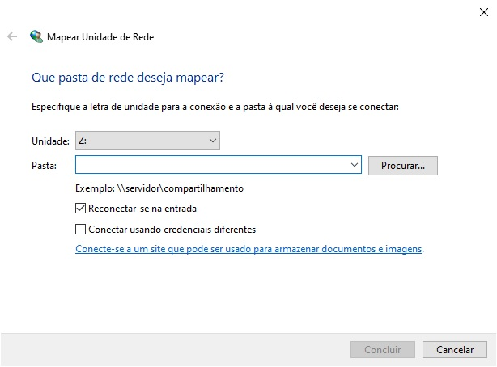Agora basta adicionar ROMs no diretório /roms em suas respectivas pastas de sistema (como por exemplo /roms/snes para roms de Super Nintendo ou /roms/megadrive para as de Mega Drive).
Nos diretórios das plataformas você encontrará um arquivo _info.txt informando quais tipos de arquivos são aceitos para aquela pasta.
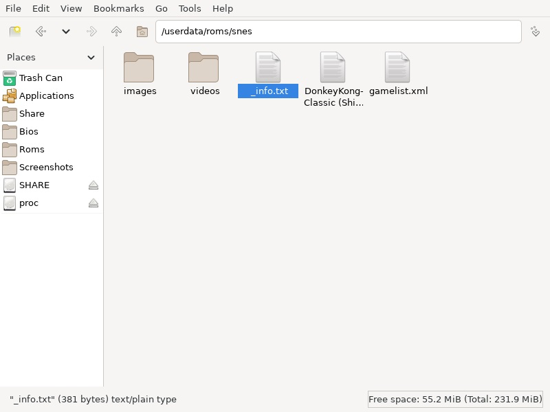Uma vez que você adicionou os jogos que deseja selecione GAME SETTINGS no menu principal:
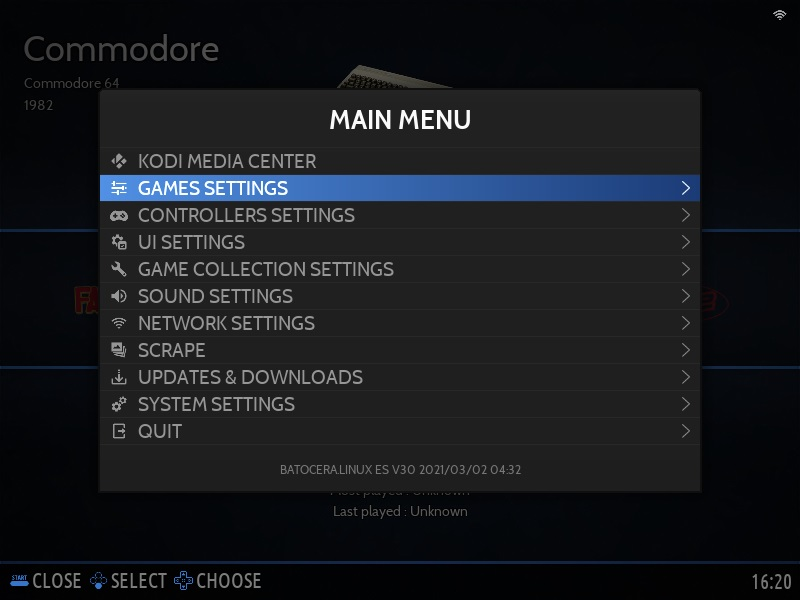Em seguida atualize o cache da sua biblioteca em UPDATE GAMES LISTS:
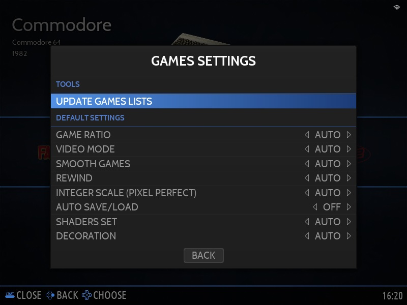E para saber quais arquivos de BIOS são necessários para a sua plataforma navegue até MISSING BIOS:
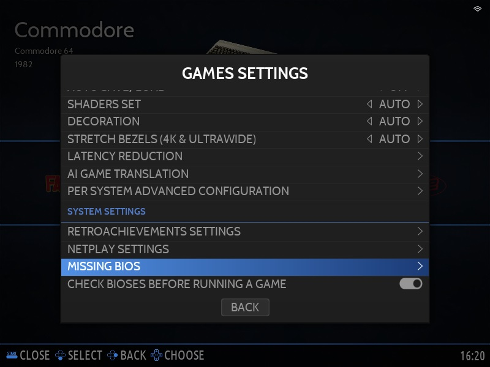Pesquise na internet, baixe e adicione no diretório /bios os arquivos que estão faltando para a sua plataforma desejada, os arquivos BIOS devem bater com esse menu tanto em nome de arquivo quanto em MD5, ou seja, ele deve ser EXATAMENTE o que o Batocera pede. Depois de transferi-los selecione a opção REFRESH para atualizar o cache de arquivos BIOS.
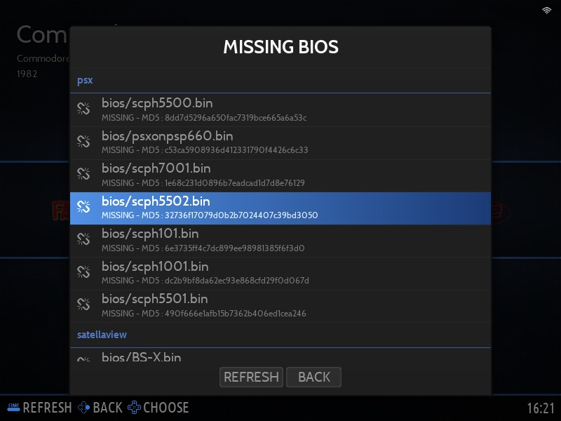Você pode conferir se baixou o arquivo correto através do Md5Checker.
Basta arrastar o arquivo de BIOS para a janela do Md5Checker e verificar se o código do Md5 bate com o do Batocera

E onde consigo as roms/isos/bios e qual a diferença?
Nos cartuchos dos jogos existe uma memória (ou memórias) de somente leitura (read only memory ou rom), a emulação de jogos baseados em consoles de cartuchos utilizam os arquivos de dentro dessa memória para rodar os jogos, no caso de consoles baseados em disco você tem um arquivo que é a representação da imagem gravada nesse disco que segue o padrão ISO9660, daí o nome do arquivo iso. Alguns consoles tem por padrão usarem os arquivos de sistema de entrada e saída contidos no próprio cartucho para funcionar enquanto outros (como Playstation, Neo Geo, Nintendo DS, Sega Saturn, Dreamcast etc) tem basicamente um sistema operacional dentro de uma memória no próprio console.
Como eu tenho preferência pelas versões americanas dos jogos, essas geralmente estão disponíveis no Vimm's Lair para Nintendinho, Super Nintendo, Nintendo 64, Game Boy Advance, Nintendo DS e Mega Drive, no caso das isos de Sega CD, Saturn, Dreamcast, GameCube, Playstation e Playstation 2 o CDRomance oferece uma boa seleção com uma boa velocidade de download
Para CPS1, CPS2 e Neo Geo o Planet Emu e o GameTronik tem uma excelente coleção.
As BIOS são um pouco mais complicadas pois no caso do Batocera ele precisa de arquivos específicos, mas existem alguns links em que (talvez) você pode encontrar as bios necessárias, como o CDRomance ou archtaurus BIOS Collection, para as Kickstart roms do Amiga você pode fuçar o amigas.ru na seção KS-ROMs